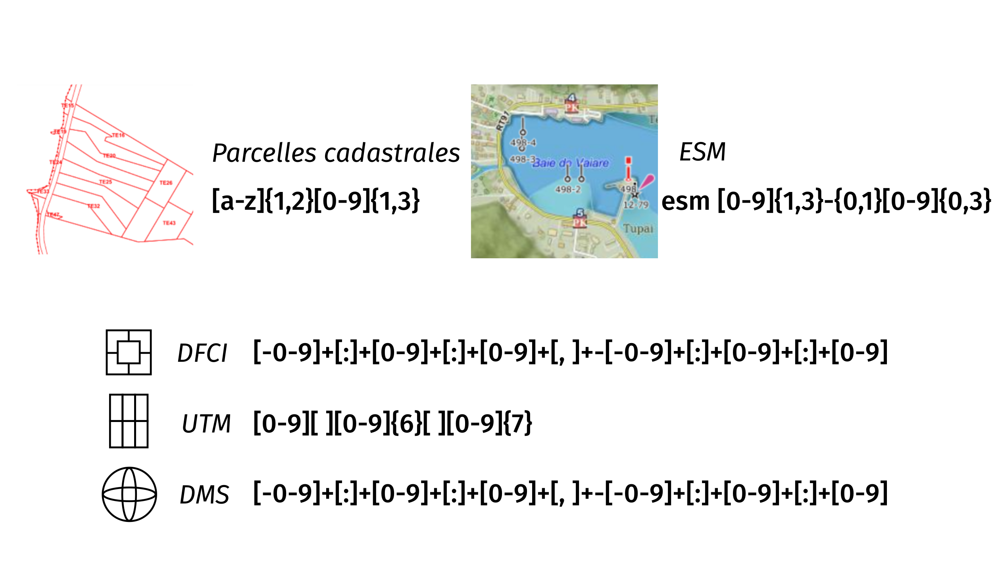

Mise en place d'un moteur de recherche pour un portail géographique dont la pertinence tient compte de l'éloignement géographique
Service de l'informatique de la Polynésie française, cellule SIG
Projet encadré par Emmanuel Bouniot
Emmanuel Bourassin, ingénieur 2e année
Contexte
contexte du stage
Moteur de recherche
Te Fenua
Plan
Présentation
Utilisateurs
Données
Choix techniques
Plan
Elasticsearch
Fonctionnement, format
Pertinence, calcul de score
Aspect sémantique
Plan
Index thématiques
Expressions régulières
Mots-clés thématiques

Processus
Aspect géospatial
Plan
Comportements
Principe et préalables

Prise en compte de la distance
Processus
Prolongement
Suite, réutilisation et perfectionnement
Tous mes remerciements à:
Emmanuel BOUNIOT (SIPF/Cellule SIG),
Tehei TAIORE (SIPF/Cellule SIG),
Benoît COSTES (IGN/ENSG/DE/DEI)
pour leurs judicieux conseils et bienveillant accompagnement.
Mais aussi à Hubert, Mathieu, Bryan, Leo, Fabrice, ...
Des question
Des questions ?